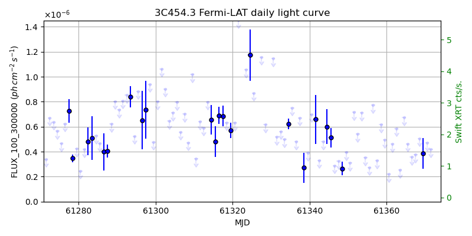
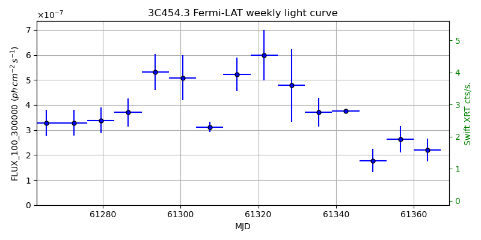
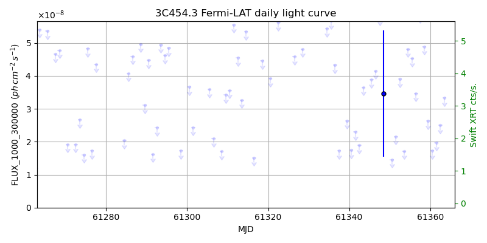
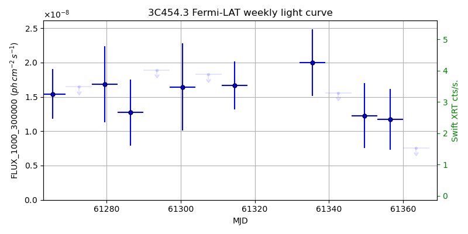

LAT Lightcurve site: https://fermi.gsfc.nasa.gov/ssc/data/access/lat/msl_lc/source/3C_454d3
Swift site: https://www.swift.psu.edu/monitoring/source.php?source=3C454.3
NED: Query
Time of last update of this page: UT: 2026-11-28 16:30 (MJD: 61372.688)
| Property | Value |
|---|---|
| R.A. | 22:53:57.84 |
| Dec. | 16:08:52.8 |
| z | 0.858 |
| 3FGL SpectrumType | PLSuperExpCutoff |
| 3FGL PL Index | |
| 3FGL Flux_100_300000 | 2.39e-06 1 / (s cm2) |
| 3FGL Flux_1000_300000 | 1.06e-07 1 / (s cm2) |
| 3FGL Flux >200 GeV | 7.45e-14 1 / (s cm2) |
| 3FGL Extrap. Crab >200 GeV | 0.00 |
| 3FGL Flux After EBL Absorption >200GeV | 4.70e-15 1 / (s cm2) |
| 3FGL EBL Crab Fraction >200GeV | 0.00 |

| MJD | dMJD | Flux | dFlux | Frac3FGL | FracCrab>200GeV | EBLFracCrab>200GeV |
|---|---|---|---|---|---|---|
| 61367.50 | 0.50 | 3.75e-07 | 0.00e+00 | 0.00 | 0.00 | 0.00 |
| 61368.50 | 0.50 | 5.06e-07 | 0.00e+00 | 0.00 | 0.00 | 0.00 |
| 61369.50 | 0.50 | 3.84e-07 | 1.23e-07 | 0.16 | 0.00 | 0.00 |
| 61370.50 | 0.50 | 4.71e-07 | 0.00e+00 | 0.00 | 0.00 | 0.00 |
| 61371.50 | 0.50 | 4.17e-07 | 0.00e+00 | 0.00 | 0.00 | 0.00 |

| MJD | dMJD | Flux | dFlux | Frac3FGL | FracCrab>200GeV | EBLFracCrab>200GeV |
|---|---|---|---|---|---|---|
| 61335.50 | 3.50 | 3.71e-07 | 5.76e-08 | 0.15 | 0.00 | 0.00 |
| 61342.50 | 3.50 | 3.75e-07 | 6.50e-09 | 0.16 | 0.00 | 0.00 |
| 61349.50 | 3.50 | 1.78e-07 | 4.72e-08 | 0.07 | 0.00 | 0.00 |
| 61356.50 | 3.50 | 2.63e-07 | 5.28e-08 | 0.11 | 0.00 | 0.00 |
| 61363.50 | 3.50 | 2.19e-07 | 4.56e-08 | 0.09 | 0.00 | 0.00 |

| MJD | dMJD | Flux | dFlux | Frac3FGL | FracCrab>200GeV | EBLFracCrab>200GeV |
|---|---|---|---|---|---|---|
| 61367.50 | 0.50 | 3.40e-08 | 0.00e+00 | 0.00 | 0.00 | 0.00 |
| 61368.50 | 0.50 | 5.63e-08 | 0.00e+00 | 0.00 | 0.00 | 0.00 |
| 61369.50 | 0.50 | 3.03e-08 | 0.00e+00 | 0.00 | 0.00 | 0.00 |
| 61370.50 | 0.50 | 3.58e-08 | 0.00e+00 | 0.00 | 0.00 | 0.00 |
| 61371.50 | 0.50 | 1.15e-08 | 0.00e+00 | 0.00 | 0.00 | 0.00 |

| MJD | dMJD | Flux | dFlux | Frac3FGL | FracCrab>200GeV | EBLFracCrab>200GeV |
|---|---|---|---|---|---|---|
| 61335.50 | 3.50 | 2.00e-08 | 4.86e-09 | 0.19 | 0.00 | 0.00 |
| 61342.50 | 3.50 | 1.56e-08 | 0.00e+00 | 0.00 | 0.00 | 0.00 |
| 61349.50 | 3.50 | 1.23e-08 | 4.74e-09 | 0.12 | 0.00 | 0.00 |
| 61356.50 | 3.50 | 1.17e-08 | 4.44e-09 | 0.11 | 0.00 | 0.00 |
| 61363.50 | 3.50 | 7.57e-09 | 0.00e+00 | 0.00 | 0.00 | 0.00 |
--------------------------------------------------------- Using user-supplied coords: 22:53:57.84 16:08:52.8 2000 --------------------------------------------------------- FLWO UT night of: 2026-11-29 Local Sid. @ Midnight: 04:08 Sunset (-15.0) (local, UT): 18:31 01:31 Sunrise (-15.0) (local, UT): 05:53 12:53 Moonrise (local, UT): 21:57 04:57 Moonset (local, UT): Moon phase: 0.72 --------------------------------------------------------- AzTime LSID UT Obj_el Obj_az Mn_el Mn_az Sep. --------------------------------------------------------- 18:31 22:39 01:31 74.2 165.8 -32.9 32.1 132.9 19:01 23:09 02:01 74.3 192.6 -29.4 38.9 133.2 19:31 23:39 02:31 71.6 215.7 -25.4 45.0 133.5 20:01 00:09 03:01 67.2 232.0 -21.0 50.6 133.8 20:31 00:39 03:31 61.8 243.1 -16.2 55.6 134.1 21:01 01:09 04:01 55.9 251.2 -11.1 60.2 134.4 21:31 01:39 04:31 49.7 257.4 -5.4 64.5 134.7 22:01 02:09 05:01 43.4 262.5 0.4 68.5 134.9 22:31 02:39 05:31 37.0 267.0 5.8 72.2 135.2 23:01 03:10 06:01 30.7 271.0 11.6 75.8 135.4 23:31 03:40 06:31 24.3 274.8 17.5 79.4 135.6 00:01 04:10 07:01 17.9 278.5 23.6 82.9 135.9 00:31 04:40 07:31 11.7 282.1 29.7 86.5 136.1 01:01 05:10 08:01 5.5 285.8 35.8 90.3 136.3 01:31 05:40 08:31 -0.1 289.7 42.0 94.4 136.5 02:01 06:10 09:01 -6.6 293.8 48.1 99.1 136.7 02:31 06:40 09:31 -12.4 298.3 54.2 104.7 136.9 03:01 07:10 10:01 -17.9 303.1 60.1 111.7 137.1 03:31 07:40 10:31 -23.1 308.4 65.6 121.1 137.3 04:01 08:10 11:01 -27.9 314.4 70.5 134.7 137.5 04:31 08:40 11:31 -32.2 321.1 74.0 154.7 137.6 05:01 09:11 12:01 -35.9 328.6 75.2 181.1 137.8 05:31 09:41 12:31 -38.8 336.9 73.6 206.8 138.0 05:53 10:02 12:53 -40.4 343.4 71.0 221.2 138.2 --------------------------------------------------------- Dark hours >55 deg.: 2.57 srcstart (UT): 2026-11-29 01:31 srcend (UT): 2026-11-29 04:05